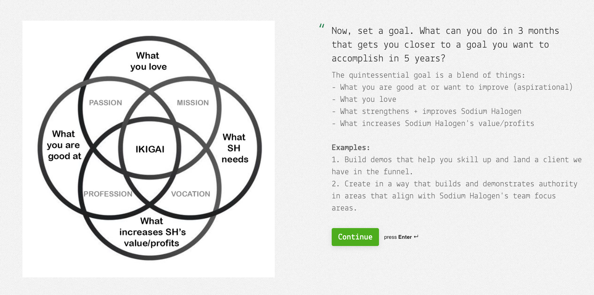

Helping The Team With 3 Month Goals
For almost 4 years now, we’ve done quarterly checkups with our team. Every 3 months, we’ll meet with one team member and see how they’re doing and ask how we can help them.
Goal Setting for the Team
Yet, one area we’ve needed help with is helping them set goals for themselves. We’ve pushed them to think 5 years out about where they want to be. Like Google’s 20% Rule, the 3 Month Goal is aimed to be worked on during ~20% of their at-work time. If the goal can be centered around how it helps them, the team, AND the company, it’s a win-win-win. Think IKIGAI. Here is an image of our checkup form asking the team member to pick a 3-month goal that aligns with their’s and SH’s wants and needs.

New Goal Setting Idea
Here is what we came up with today. We’ll see how it goes.
3 Month Goal: What if you set a goal of X number of sandboxes created over the following x weeks (until the next checkup) covering a mix of X, Y, and Z areas in which you want to practice (i.e., backend, full-stack, TDD, a11y, react-native)?
Example: So I can get reps in areas that help me and SH…by April 10th, I’ll have completed 4 tiny sandboxes related to upcoming features we need in SH projects. I’ll complete one every 2-3 weeks and share it with the team during Beer30 or Loom.
This rapid prototyping approach will make setting trackable goals easier and less intimidating.